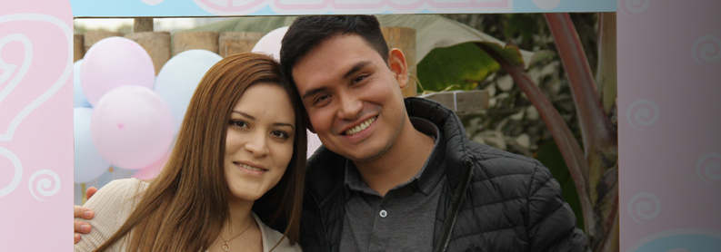

Fiestas privadas
Celebra con barra, pista y decoración temática. Nosotros nos encargamos de la experiencia; tú de disfrutar.
- Elige el tema
- Decoración temática
- Bebidas y coctelería
- Cumpleaños, Aniversarios, Festejos y más